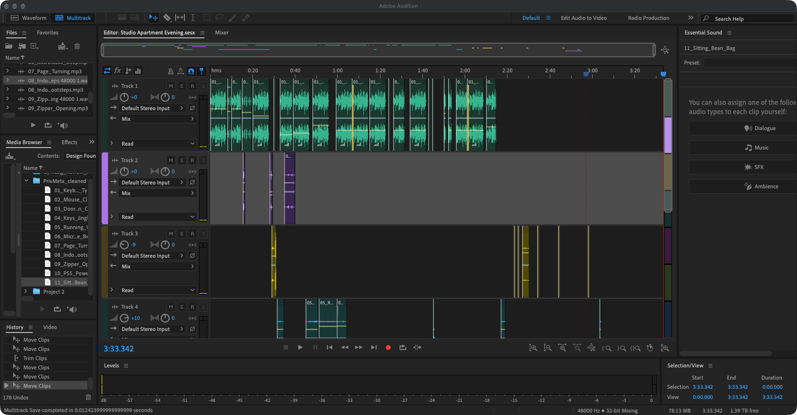

Break the repetition.
I varied the keyboard and mouse clips with different lengths, pauses, and occasional rapid clicks. The work continues through the evening, but its rhythm changes as other sounds interrupt it.
One shared space.
From finishing work to winding down.

A sound-only story about finishing work and winding down in a shared studio apartment.
I am working at my computer while my significant other comes home and settles in. The focus shifts between my keyboard and the everyday sounds around me: keys, footsteps, a zipper, running water, and the microwave.
I keep trying to finish, but the interruptions break my concentration. Eventually, I step away from the desk. My significant other turns pages while I move across the apartment, settle into a beanbag, and turn on the PlayStation.
I started by breaking the evening into everyday actions: working, someone arriving home, kitchen activity, reading, and gaming. I recorded the sounds myself and arranged them on separate tracks in Adobe Audition so I could overlap the activities and control what the listener focused on.
Based on the feedback on my outline, I added interruptions to give the story more tension. Instead of only presenting a sequence of household sounds, I used changes in the typing to show someone trying to stay focused.
I varied the keyboard and mouse clips with different lengths, pauses, and occasional rapid clicks. The work continues through the evening, but its rhythm changes as other sounds interrupt it.
I lowered the typing during household activity so attention could move to the interruptions. I cut the water into sections to suggest the tap running and gradually closing, and added subtle Studio Reverb to the arrival footsteps.
Footsteps mark the move away from the desk while page turns suggest my significant other reading. I kept some beanbag movement overlapping the PlayStation beep because I was still adjusting my position as I turned it on.
My multitrack arrangement, showing the computer activity, arrival, kitchen sounds, and quieter ending.

All 11 sounds were recorded by Harvey Chowdhury. No external audio was used.
The finished piece uses editing, layering, volume changes, and subtle reverb to connect these recordings into one evening.
3 minutes, 6 seconds · Self-recorded sound · Adobe Audition